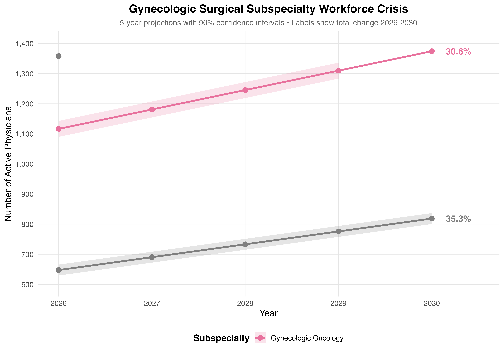
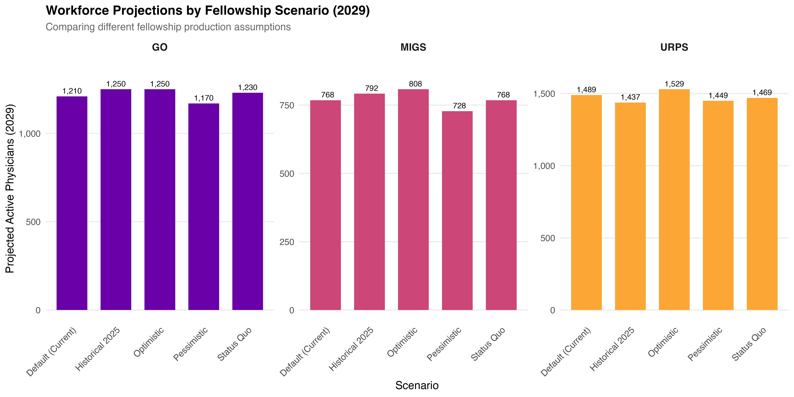
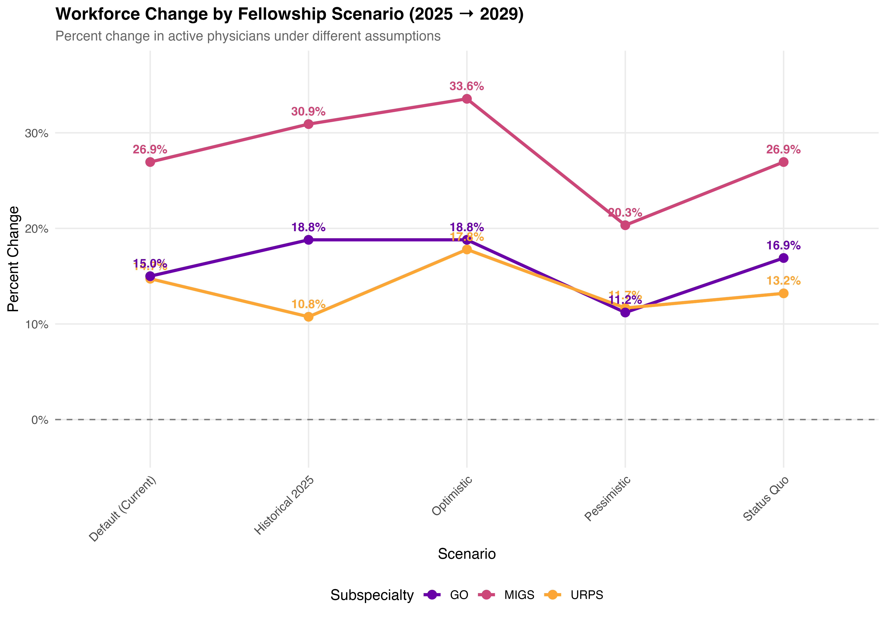
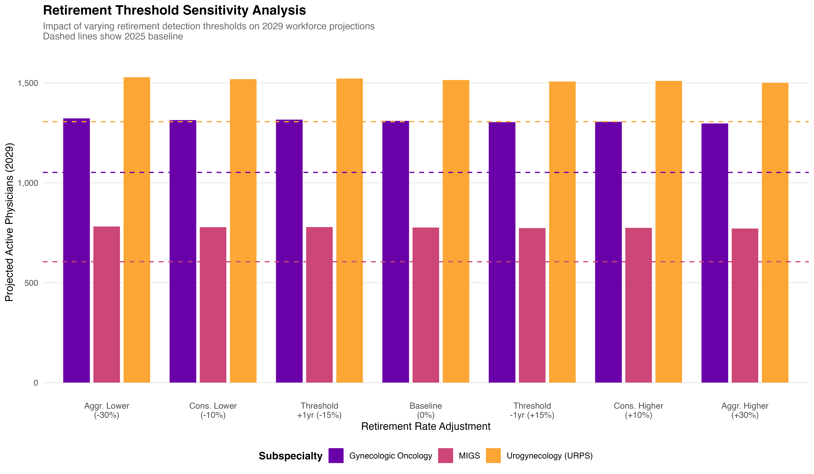
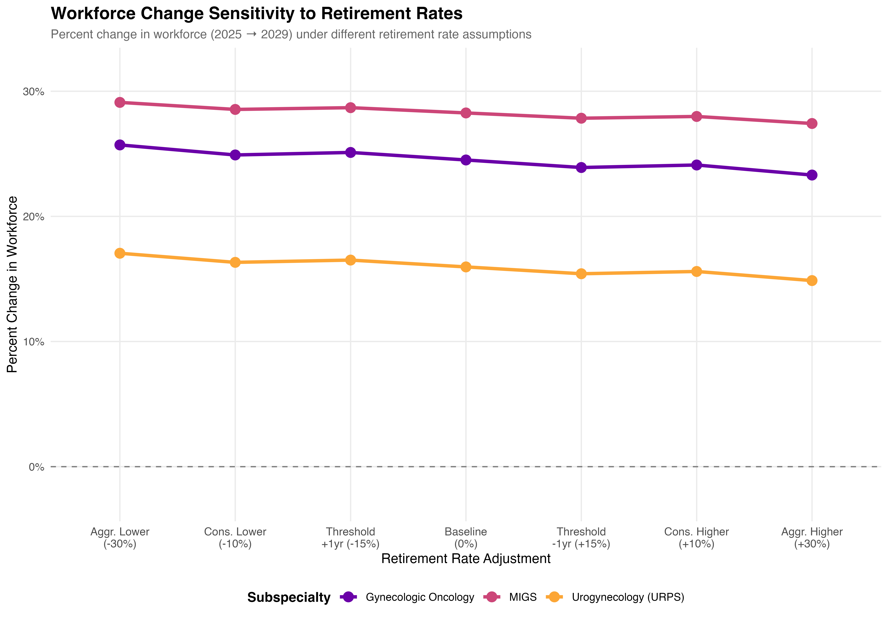
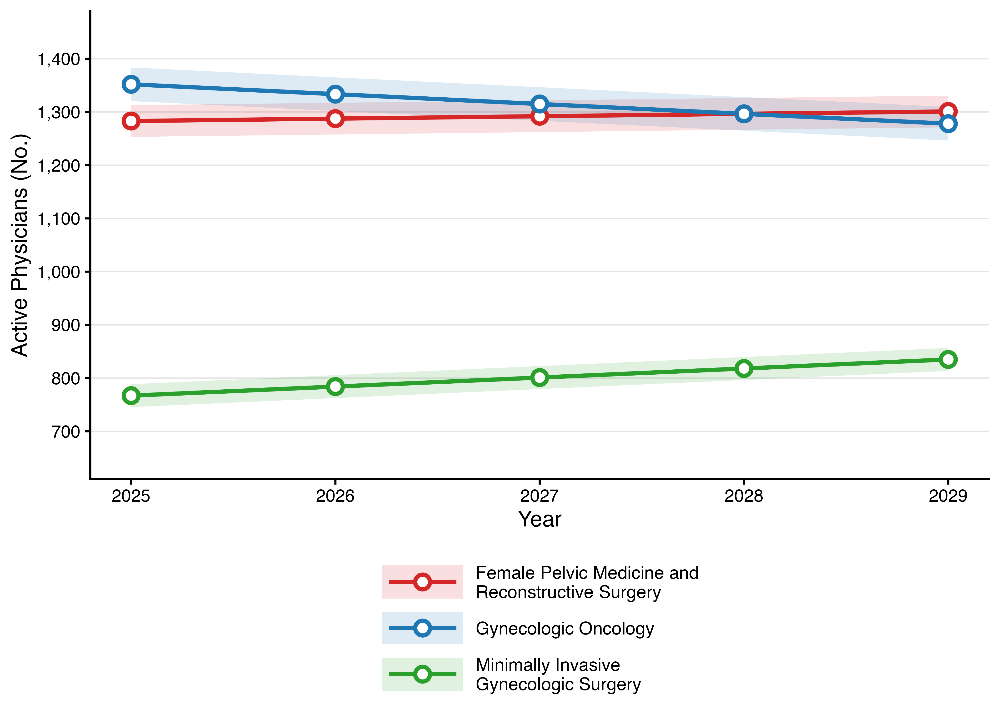
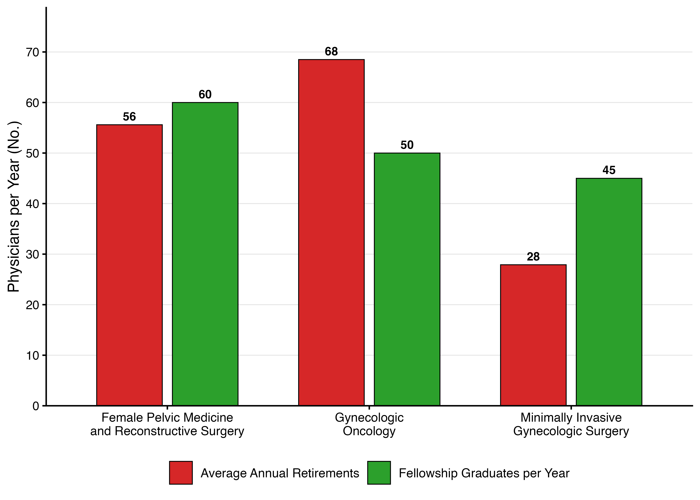
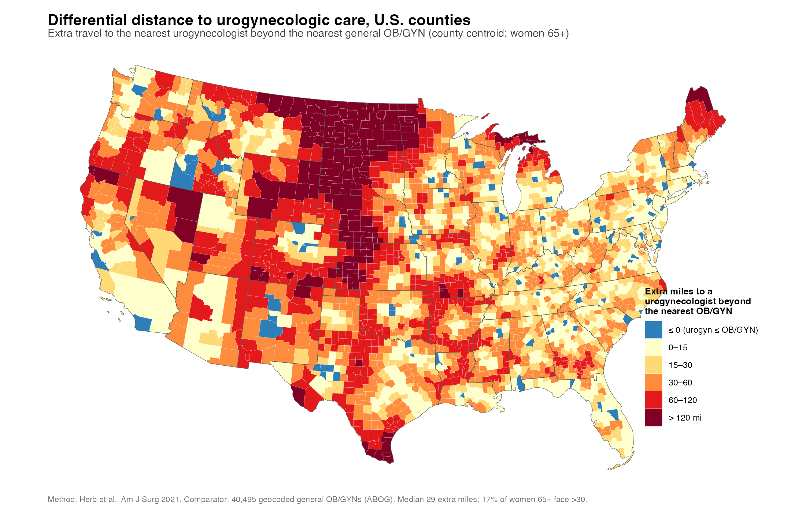

Title: Gynecologic Subspecialty Workforce Vulnerability: Retirement Approaches or Exceeds Fellowship Replacement Capacity
Authors: Tyler Muffly, MD · Sydney Archer, MD, MPH
Affiliation: Denver Health Medical Center / University of Colorado School of Medicine
Target Journal: Obstetrics & Gynecology
Status: Under review (2026)
Presented as an oral presentation at the 52nd Annual Meeting of the Society of Gynecologic Surgeons, Phoenix, AZ, March 2026.

Five-year projections for the three gynecologic surgical subspecialties with 90% confidence intervals; labels give total change 2026→2030. Gynecologic oncology declines (−6.8%) while MIGS grows (+11.1%) and urogynecology is flat (+1.8%) — the divergence the paper is about. Generated by code/03_create_abstract_figure.R.
Quick Start
Produces all figures, tables, and a rendered manuscript in ~4 seconds. No external data required — seed data is committed to data/.
Prerequisites
R ≥ 4.3 and the following packages:
install.packages(c(
"tidyverse", "here", "yaml", "scales",
"knitr", "kableExtra", "rmarkdown",
"gtsummary", "flextable", "jsonlite", "testthat"
))Repository Structure
cliff/
├── code/
│ ├── 00_RUN_ALL.R # Master pipeline (run this)
│ ├── 01_consolidate_workforce_data.R # Re-run Monte Carlo (optional)
│ ├── 02_create_figures.R # Figure 1 & 2
│ ├── 03_create_abstract_figure.R # SGS abstract figure
│ ├── 04_compare_scenarios.R # Fellowship sensitivity
│ ├── 05_validate_with_monte_carlo.R # Monte Carlo validation
│ ├── 06_retirement_sensitivity.R # Retirement threshold sensitivity
│ ├── 07_create_table1.R # Demographics table
│ ├── 08_pairwise_comparisons.R # Pairwise scenario comparisons
│ └── workforce_statistics.R # Inline statistics helpers
├── config/
│ └── fellowship_assumptions.yml # 5 fellowship scenarios
├── data/
│ └── workforce_projections_consolidated.csv # Seeded from manuscript
├── manuscript/
│ ├── manuscript_WORKFORCE_CLIFF.Rmd # Manuscript source (canonical)
│ ├── supplement_WORKFORCE_CLIFF.Rmd # Supplemental Digital Content (S1-S30)
│ ├── title_page_WORKFORCE_CLIFF.Rmd
│ ├── references_WORKFORCE_CLIFF.bib
│ └── RESPONSE_TO_REVIEWERS_WORKFORCE_CLIFF.md
├── figures/ # Generated at runtime
├── app/
│ ├── app.R # Standalone Shiny retirement cliff app
│ └── R/helpers_retirement_cliff.R
├── scripts/
│ └── fig_fpmrs_supply_line.R # Static FPMRS supply/demand figure
├── tests/testthat/
│ └── test-cliff-workforce-scripts.R
└── outputs/runs/ # Timestamped run archivesRebuilding the data
Every artifact under data/ that the manuscript or supplement reads has a generator in scripts/. docs/PIPELINE.md is the map: generator, what it writes, what it reads, and what it requires. That map is generated, not hand-written:
tests/testthat/test-pipeline-map-current.R regenerates and compares it, so adding or renaming a generator fails the suite until the map is rebuilt.
The single source of truth
data/workforce_projections_consolidated.csv is the one table every manuscript number is computed from. scripts/rebuild_ssot_revised.R is the only script authorised to write it. Only measured inputs are typed there; every algebraically derived column is computed and its identity asserted before the write. See PROVENANCE.md for per-column lineage.
Inputs that do not live here
Some generators read from the isochrones monorepo this repository was extracted from, or from an external database. They resolve those through environment variables and fail loudly rather than silently rebuilding on whatever is present:
| Variable | Default | Needed by |
|---|---|---|
CLIFF_ISOCHRONES_ROOT |
~/isochrones |
generators reading the provider roster or ABU crosswalks |
CLIFF_URPS_SNAPSHOT |
~/mufflyaccess/tests/testthat/fixtures/isochrones-v3.0.0/urps_provider_snapshot.parquet |
generators needing per-physician v3.0.0 cohort membership |
CLIFF_RENDER_TESTS |
unset | opt-in: renders the supplement as part of the test suite |
The Requires column in docs/PIPELINE.md says which generators need which. Generators with no requirement run from a clean checkout.
Numbers are never restated in prose
Manuscript and supplement read their headline figures inline from the artifacts rather than quoting them. tests/testthat/test-ssot-no-stale-published-numbers.R enforces this: a literal in rendered prose, in a table caption, or embedded in a data file fails the suite. The same file carries a Hall of Shame of values that were once published, were wrong, and must never reappear.
Not every irreproducible number is a wrong one. classifier_validation_external.csv regenerates URPS n=415 → 499 and sensitivity 0.250 → 0.188, and both are correct: the generator is byte-identical to the isochrones original, the cohort is unchanged, and the state-board registry that serves as the gold standard is gitignored and was rewritten after the artifact was committed. Such cases are adjudicated in docs/adjudication/ and are deliberately kept out of the Hall of Shame, which is for numbers that were wrong.
Pipeline Scenarios
Rscript code/00_RUN_ALL.R # default (current best estimates)
Rscript code/00_RUN_ALL.R optimistic # +10 fellows/yr each subspecialty
Rscript code/00_RUN_ALL.R pessimistic # -10 fellows/yr each subspecialty
Rscript code/00_RUN_ALL.R historical_2025
Rscript code/00_RUN_ALL.R status_quoStep 1 is skipped when data/workforce_projections_consolidated.csv already exists. To force a rebuild from raw Monte Carlo inputs:
Scenario comparison

2029 headcount under each fellowship-production assumption. The spread is narrow — roughly ±3% around the default for GO and URPS — because fellowship inflow is a small annual increment against a large standing stock. Generated by code/04_compare_scenarios.R.

The same five scenarios as percent change. MIGS is the most scenario-sensitive (20.3%–33.6%); GO and URPS move less and track each other closely.
Retirement-threshold sensitivity
Because retirement is detected rather than reported, the projection depends on where the detection threshold is set. code/06_retirement_sensitivity.R sweeps it ±30% and shifts it ±1 year:

Projected 2029 headcount at each threshold; dashed lines mark the 2025 baseline. Every subspecialty stays above its baseline across the full sweep.

The same sweep as percent change. Across a ±30% swing in the retirement rate the projected change moves by only ~2 percentage points per subspecialty — the headline direction is not sensitive to the retirement threshold.
Key Findings
Workforce Projections (2025 → 2029, Monte Carlo 10,000 iterations)
| Subspecialty | 2025 | 2029 (95% CI) | Change | Fellows/yr | Retirements/yr | Ratio | Status |
|---|---|---|---|---|---|---|---|
| FPMRS | 1,283 | 1,301 (1,271–1,330) | +1.4% | 60 | 55.6 | 1.08 | Marginal |
| Gynecologic Oncology | 1,352 | 1,278 (1,246–1,310) | −5.5% | 50 | 68.5 | 0.73 | Insufficient |
| MIGS | 767 | 835 (814–857) | +8.9% | 45 | 27.9 | 1.61 | Adequate |

Figure 1. Workforce trajectories, 2025–2029. Gynecologic oncology (blue) crosses below FPMRS (red) by 2028; MIGS (green) grows steadily off a smaller base. Bands are 95% Monte Carlo intervals. Generated by code/02_create_figures.R.

Figure 2. The replacement gap. Average annual retirements (red) against fellowship graduates per year (green). Only gynecologic oncology is under water — 68 retirements against 50 graduates — while FPMRS is near parity (56 vs 60) and MIGS has headroom (28 vs 45). Generated by code/02_create_figures.R.
Annual Retirement Rates
- GO: 5.2% — highest risk, replacement ratio insufficient (0.73)
- FPMRS: 4.4% — marginal replacement (1.08); clinical capacity is the bottleneck
- MIGS: 3.4% — youngest subspecialty, robust growth
[!IMPORTANT] Two baselines are currently in the repo, and the figures above are the older one. The three figures above were rendered 2026-07-25 from the manuscript baseline (FPMRS 1,283 · GO 1,352 · MIGS 767; replacement ratios 0.73–1.61). The committed
data/workforce_projections_consolidated.csvwas later rebuilt on the adopted 1,306 URPS baseline (commit42fefcd), and now reads URPS 1,306 → 1,514 (+16.0%), GO 1,052 → 1,310 (+24.5%), MIGS 605 → 776 (+28.3%) with replacement ratios of 5.38 / 7.11 / 11.06 — all “Above replacement.” The scenario and sensitivity figures further down were generated from that rebuild.Because
code/02_create_figures.Rreads the same CSV, re-runningcode/00_RUN_ALL.Rtoday regenerates Figures 1–2 from the 1,306 baseline, and they will no longer match the table above. Which baseline the manuscript ships on is not yet settled here — seedev/archive/URPS_CONTAINMENT_AND_BASELINE_NOTES.md(archived: the 1,295-vs-1,339 decision it poses was resolved to 1,306).
Shiny Apps
Interactive explorers built from this repo’s model:
| App | What it does | Launch |
|---|---|---|
| Urogynecology Workforce Replacement Explorer | Projects active urogynecologist headcount under adjustable fellowship-inflow, departure-rate, and graduate-conversion scenarios |
▶ Live app · shiny::runApp("shiny_urps_scenarios")
|
| Urogynecology Effective-Adequacy Explorer | Supply-vs-demand adequacy and capacity margin, with a slider for urologists’ share of clinical time in urogynecology — productivity-adjusted capacity, “beyond the head count” |
▶ Live app · shiny::runApp("shiny_urps_adequacy")
|
Both apps can also be run locally from a clone with shiny::runApp().
Interactive map
Urogynecology geographic access — a self-contained Leaflet map: county choropleth of straight-line miles to the nearest urogynecologist, with every provider marked by board pathway (ABU urology vs ABOG OB/GYN).
- File:
outputs/urps_module_d_access_map_2026-07-23.html— download and open in a browser for the interactive version - Rendered: view online (via htmlpreview; may take a moment to load the ~2.4 MB widget)
- Regenerate:
Rscript scripts/urps_module_d_map_2026-07-23.R
Differential distance to subspecialty care

How much farther a woman must travel for urogynecologic care than for general OB/GYN care, by county centroid (women 65+). Isolating the differential* separates subspecialty scarcity from general rural physician scarcity — a county that is far from everything shows up pale, while a county with an OB/GYN but no urogynecologist shows up dark. The Great Plains and northern Maine carry >120 extra miles; median 29 extra miles, and 17% of women 65+ face more than 30. Comparator is 40,495 geocoded general OB/GYNs; method after Herb et al., Am J Surg 2021. Generated by scripts/urps_module_d_differential_map.R.*
Geographic concentration & equity
Beyond the supply-vs-retirement count, cliff reports how unevenly the workforce is distributed and who it is — the distributional lens the Sheps Center pediatric-subspecialty model uses at the subnational level. Computed from the committed de-identified roster (N = 1,339 — the active baseline, selected by the shared inmodel() filter in R/in_model_baseline.R so the geographic and concentration analyses cannot drift to different cohorts):
- Active urogynecologists practice in only 386 of ~3,143 US counties (87.7% have none); county Gini 0.94, state Gini 0.56, top-5 states = 38%.
- 96% urban / 1.1% rural; 53% female; 5.7% IMG; 29.5% in a designated HPSA.

Lorenz curves for the N = 1,339 active baseline. The county curve (blue) hugs the axis until ~88% of counties have been passed — those counties hold zero urogynecologists — then rises almost vertically, giving a Gini of 0.937. The state curve (red) is far less extreme (0.564). Maldistribution is a county-level, not a regional, phenomenon. Generated by scripts/urps_concentration_equity_2026-08-01.R.
The in_model_baseline flag itself is upstream-owned (isochrones adopts in_model_baseline == TRUE as the fail-closed active-in-year definition; the count is contract-pinned as rows_national 1339). cliff consumes it and never re-derives it — see docs/SSOT_LEDGER.md iteration 54.
Regenerate: Rscript scripts/urps_concentration_equity_2026-08-01.R — see WORKFORCE_CONCENTRATION_EQUITY.md (metrics in R/workforce_concentration_metrics.R). The modeling precedent and a paste-ready Methods paragraph are in PEDS_SUBSPEC_MICROSIMULATION_COMPARISON.md (Fraher et al., Pediatrics 2024;153(Suppl 2):e2023063678C).
Figure index
Every figure in this README, what produces it, the data it reads, the day it was generated (git commit date), and which workforce baseline it reflects. All are committed; .tiff companions at publication resolution sit beside each .png. The canonical, fuller record (including the upstream isochrones-to-mufflyaccess data lineage) is docs/FIGURE_PROVENANCE.md; a machine-readable copy is docs/figure_provenance.csv.
| Figure | File | Generator | Reads | Generated | Baseline | Status |
|---|---|---|---|---|---|---|
| Abstract / hero (2026 to 2030) | figures/workforce_crisis_abstract.png |
code/03_create_abstract_figure.R |
workforce_projections_consolidated.csv |
2026-08-02 | 1,306 | current |
| 1 - Workforce trajectories | figures/figure1_workforce_trajectories.png |
code/02_create_figures.R |
workforce_projections_consolidated.csv |
2026-08-02 | 1,306 | current |
| 2 - Replacement gap | figures/figure2_replacement_gap.png |
code/02_create_figures.R |
workforce_projections_consolidated.csv |
2026-08-02 | 1,306 | current |
| Fellowship scenarios, 2029 level | figures/scenario_comparison.png |
code/04_compare_scenarios.R |
..._consolidated.csv + scenario_comparison.csv
|
2026-08-02 | 1,306 | current |
| Fellowship scenarios, % change | figures/scenario_comparison_change.png |
code/04_compare_scenarios.R |
..._consolidated.csv + scenario_comparison.csv
|
2026-08-02 | 1,306 | current |
| Retirement sensitivity, 2029 level | figures/retirement_sensitivity_workforce.png |
code/06_retirement_sensitivity.R |
..._consolidated.csv + retirement_sensitivity.csv
|
2026-08-02 | 1,306 | current |
| Retirement sensitivity, % change | figures/retirement_sensitivity_change.png |
code/06_retirement_sensitivity.R |
..._consolidated.csv + retirement_sensitivity.csv
|
2026-08-02 | 1,306 | current |
| Differential distance map | outputs/urps_differential_distance_map_2026-07-23.png |
scripts/urps_module_d_differential_map.R |
enriched roster | 2026-07-23 | roster (N = 1,339) | current |
| Concentration Lorenz curves | figures/urps_concentration_lorenz_2026-08-01.png |
scripts/urps_concentration_equity_2026-08-01.R |
abog_* + abu_all_urps_ENRICHED_2026-07-22.csv
|
2026-08-02 | roster (N = 1,339) | current |
| Access map (interactive) | outputs/urps_module_d_access_map_2026-07-23.html |
scripts/urps_module_d_map_2026-07-23.R |
enriched roster | 2026-07-23 | roster (N = 1,339) | current |
Manuscript figures and README figures agree (as of 2026-08-02). The manuscript’s Figure 1 and Figure 2 (manuscript/figures/figure1-1.png, figure2-1.png, drawn by manuscript/R/workforce_figures.R at render time) and the README hero/Fig 1/Fig 2 (workforce_crisis_abstract, figure1_workforce_trajectories, figure2_replacement_gap) are all on the current 1,306 baseline. The three README figures had lagged at a pre-1,306 version generated 2026-07-24; they were regenerated on 2026-08-02 from the current data/workforce_projections_consolidated.csv (see docs/FIGURE_PROVENANCE.md). If that CSV changes again, re-run Rscript code/02_create_figures.R and Rscript code/03_create_abstract_figure.R (and re-render the manuscript) to keep them in sync. The roster-derived figures (Lorenz, differential-distance and access maps) are independent of the consolidated CSV: they read the committed enriched rosters through the shared inmodel() filter.
Data Sources
| Source | Years | Purpose |
|---|---|---|
| ABOG certification records | 2013–2024 | Subspecialty identification |
| NPPES | 2013–2024 | Practice locations, demographics |
| Medicare Part B claims | 2013–2022 | Retirement detection |
| Medicare Part D prescriber | 2013–2022 | Retirement detection |
| CMS Open Payments | 2013–2023 | Retirement detection |
| PECOS enrollment | 2013–2024 | Retirement detection |
| Physician Compare | 2013–2023 | Status changes |
| State medical boards (CA, TX, FL, WA) | Validation | Algorithm validation |
| ACGME program data | 2022–2024 | Fellowship pipeline |
All sources are publicly available and de-identified. IRB review not required.
Provenance & upstream (isochrones monorepo)
This repository was extracted from the private isochrones monorepo, which is where the raw physician-level data (identifiable NPPES/ABOG/ABU/Medicare records) is assembled and where many of the committed artifacts in data/ are first produced. cliff vends the derived, de-identified artifacts (departure hazards, roster crosswalks, workforce projections, the supply-demand tables) — not the raw inputs.
Practically, this means:
-
Self-contained for analysis. Rendering the manuscript and running the model from the committed artifacts needs only this repo (paths resolve through
here()at the repo root; package versions are pinned inrenv.lock). -
Not self-contained for re-derivation. A handful of upstream regeneration scripts (
scripts/departure_anchor.R,scripts/hierarchical_hazard_partial_pooling.R,scripts/build_hazard_comparison.R,scripts/abu_pathway_sensitivity.R,scripts/scenario_projection_trajectories.R) read raw data from the isochrones monorepo (e.g.<isochrones>/manuscript/tables/table1_physician_characteristics.csv,<isochrones>/data/abu_urology/…). To rebuild the vended artifacts from scratch you need that monorepo; the raw identifiable data intentionally does not live here.
See dev/archive/URPS_CONTAINMENT_AND_BASELINE_NOTES.md (archived: the 1,295-vs-1,339 decision it poses was resolved to 1,306) for the exact boundary and the one open reconciliation item (the 1,295 vs 1,339 both-pathway baseline).
Contact
Tyler Muffly, MD
Department of Obstetrics and Gynecology
Denver Health Medical Center · University of Colorado School of Medicine
777 Bannock Street, Denver, CO 80204
tyler.muffly@dhha.org
GitHub: mufflyt/cliff
License
MIT License — see LICENSE.
All data sources are publicly available and de-identified.
Last updated: 2026-08-02
Installation
# install.packages("remotes")
remotes::install_github("mufflyt/cliff")The repository carries an renv lockfile. Running R from inside it activates an isolated library; if packages appear to be missing, run from the parent directory or set RENV_CONFIG_AUTOLOADER_ENABLED=FALSE.
Seven helpers are stubs
cliff was extracted from the isochrones pipeline and seven helpers came along as source() calls rather than as code — load_paths(), load_freida_programs(), find_nearest_program(), sql_state_normalize(), extract_year_safely(), normalize_string() and deduplicate_abog_data(). They still live in isochrones.
Rather than copy them here — this ecosystem has been repeatedly damaged by the same helper existing in several repositories, with load order deciding which one runs — each is defined in R/unported_helpers.R as a stub that fails at call time naming the function and where it lives. Everything that does not depend on them works normally. See that file’s header for the two ways to make them real.
Figures are generated, not pasted
Every figure in this README is produced by a script in code/, named in its caption. Regenerate before trusting one:
How to cite
citation("cliff")CITATION.cff and CITATION.bib carry the same entry for GitHub and reference managers, including the manuscript reference. ORCID 0000-0002-2044-1693.
Licence
MIT — see LICENSE.md. LICENSE holds the R-convention year/copyright stub that DESCRIPTION points at.
Related
| Package | Owns |
|---|---|
mufflyaccess |
constants and safe arithmetic shared across these projects |
twostep |
E2SFCA accessibility |
isochrones |
routing and the isochrone pipeline |
mysterymaps |
map construction |